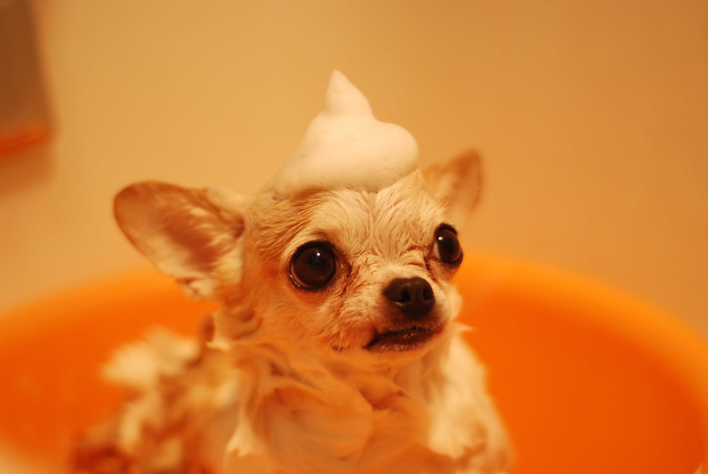

Welcome to my New Dog Website!
Your dog's diet must provide the right combination of six main nutrient groups to keep them balanced, happy, and active for as long as possible: protein, fats/oils, vitamins, minerals, carbohydrates, and water.

Dog treats, such as cookies and chews, should account for no more than 10% of your dog's daily calorie consumption, and you should carefully read the feeding instructions on the package to avoid overdoing it! Always use dog treats that are suitable for your dog's size, and if your vet has prescribed a strict no-treats policy, you can always save a portion of your dog's regular complete food to treat them instead. It's a good idea to keep a close eye on your dog's health and read our dog feeding guide below to learn which nutrients your dog needs and why.

Chocolate can be extremely harmful, and should never be fed to your dog. As little as 85 grams of cooking chocolate can kill a medium-sized dog.
-
Human food/table scraps: Your dog's digestive system is not the same as yours, and human food is often too salty or high in protein, with insufficient minerals or basic nutrients to ensure a nutritionally healthy diet. If you want to treat them to some home cooking every now and then, white chicken (bones removed) is a good option. It's easy to digest, high in calcium, and loaded with vitamins and minerals. Dogs with disturbed stomachs should be fed chicken and rice or white fish and rice, according to veterinarians.
-
Raw meat: While it may seem to be a natural food for dogs, raw meat does contain bacteria that can make your dog sick.
Tiny pieces of bone and fish bones, in particular, can harm teeth and cause obstructions in the throat and stomach. Chicken bones should never be chewed because they can splinter and cause serious harm if swallowed, and while larger bones are traditionally fed to dogs, we don't endorse them because they're often linked to intestinal obstructions.
-
Tiny pieces of bone and fish bones, in particular, can harm teeth and cause obstructions in the throat and stomach. Chicken bones should never be chewed because they can splinter and cause serious harm if swallowed, and while larger bones are traditionally fed to dogs, we don't endorse them because they're often linked to intestinal obstructions.
- 
Poisonous foods: While they may be safe for humans to consume, chocolate, onions, garlic, grapes, and raisins can cause serious illness and even death in dogs.
-
Food supplements: Regular, healthy dogs do not need food supplements if they are fed a nutritionally full and nutritious manufactured pet food. If your dog has special dietary needs due to pregnancy or a medical condition, ask your veterinarian to prescribe a nutritionally balanced, specially formulated diet for them. Supplementing the diet with supplements that are out of proportion to other nutrients can lead to skeletal deformities and other issues.